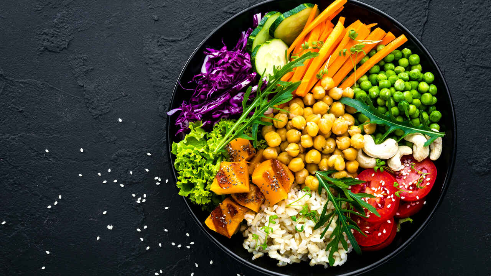

Ana Səhifə
Xidmətlər
Diyet Planları
Ana Səhifə
Xidmətlər
Diyet Planları

Vegetarian və Vegan Pəhrizi Nədir?
Vegetarian Pəhrizi
Vegetarian pəhrizi ət və balıq istehlakını dayandıran, lakin süd məhsulları və yumurtanı istehlak etməyə icazə verən bir pəhrizdir. Vegetarianlar əsasən meyvə, tərəvəzlər, taxıllar, qoz-fındıq və tərəvəzlərə əsaslanan qidalarla qidalanırlar.
Yeyilən Qidalar:
- Tərəvəzlər: Brokoli, yerkökü, kahı, ispanaq
- Meyvələr: Alma, portağal, banan, albalı
- Taxıllar: Yulaf, quinoa, qarabaşaq, düyü
- Süd məhsulları: Süd, pendir, qatıq
- Yumurta
- Qoz-fındıq, toxumlar
- Yüksək zülallı bitki mənşəli qidalar: Soya, tofu, tempeh
Yeyilməyənlər:
- Ət və balıq.
- Ətli şorbalar və konservlər.
Vegan Pəhrizi

Vegan pəhrizi bütün heyvan məhsullarını, o cümlədən ət, süd, yumurta və balı istisna edən bir pəhrizdir. Veganlar yalnız bitki mənşəli qidalarla qidalanırlar və heç bir heyvan məhsulu istifadə etmirlər.
Yeyilən Qidalar:
- Tərəvəzlər: Pomidor, kahı, bibər, yerkökü
- Meyvələr: Qarpız, ananas, mango
- Paxlalılar: Noxud, mərcimək, fasulye
- Toxumlar və qoz-fındıq: Chia, kətan toxumu, badam, qoz
- Soya məhsulları: Soya südü, tofu, tempeh
- Yulaf, quinoa və digər taxıllar
- Bitki mənşəli yağlar: Zeytun yağı, kokos yağı
Yeyilməyənlər:
- Ət və balıq.
- Yumurta və süd məhsulları.
- Ət və süd tərkibli şirniyyatlar.
Vegetarian və Vegan Pəhrizləri Arasındakı Fərqlər
| Qidalar | Vegetarian | Vegan |
|---|---|---|
| Ət İstehlakı | Bəli | Xeyir |
| Süd Məhsulları | Bəli | Xeyir |
| Yumurta | Bəli | Xeyir |
| Bitki Məhsulları | Bəli | Bəli |
| Vitamin B12 | Bəli (bəzi hallarda) | Xeyir |
| Ət Əvəzediciləri | Bəli | Bəli |